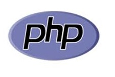

Curiosidades
Como vocês poderam ver esse é meu primeiro site introduzindo na linguagem de programação HTML, com o assunto destacado sobre Phyton
Para que esse site tornasse realidade, eu tinha de ver tutoriais no Youtube me ajudando a criar, desenvolver e dar um design melhor a este site entao com muito esforço e dedicação consegui, pois apenas com minha ideia sobre o assunto e minha determinação ao criar este site meu projeto foi realizado
Possa te interessar
-

Java
Java uma linguagem de programação muito conhecida atualmente e em tempos atrás, que pode ser usada para diversas coisas dependendo dedo programa sendo utilizado.Leia mais »
-

PHP
PHP uma linguagem de programação muito conhecida atualmente e em tempos atrás, que pode ser usada para diversas coisas dependendo dedo programa sendo utilizado.Leia mais »
-

C++
C++ uma linguagem de programação muito conhecida atualmente e em tempos atrás, que pode ser usada para diversas coisas dependendo dedo programa sendo utilizado.Leia mais »